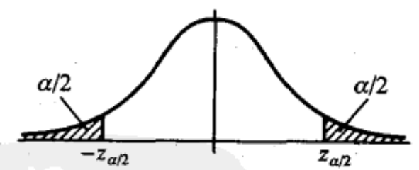
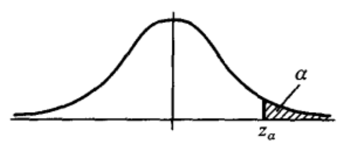

看文章是每次遇到假设检验方面的内容老是犯迷糊，导致每次都需要重新翻书本。所有我决定干脆把假设检验想管的内容做一次系统性的整理。
引例
某车间用一台包装机包装葡萄糖.袋装糖的净重是一个随机变量,它服从正态分布当机器正常时,其均值为0.5kg,标准差为0.015kg,某日开工后为检验包装机是否正常,随机地抽取它所包装的糖9袋称得净重为(kg)
$$
0.497, 0.506, 0.518, 0.524, 0.498, 0.511, 0.520, 0.515, 0.512
$$
问机器是否正常?
以$\mu$, $\sigma$分别表示这一天袋装糖的净重总体$X$的均值和标准差. $\sigma=0.015$. 于是$X \sim N(\mu,0.0152)$,这里未知问题是根据样本值来判断$\mu = 0.5$还是$\mu \neq 0.5$.为此我们提出两个相互对立的假设.
$$
H_0: \mu = 0.5 \\
H_1: \mu \neq 0.5
$$
由于要检验的假设涉及未知的总体$X$的均值$\mu$, 使用$\mu$的无偏统计量 $\bar x$ 替代。如果假设$H_0$为真, 则观察值与$\mu_0=0.5$的偏差$|\bar x - \mu_0|$ 一般不应太大. 若 $|\bar x - \mu_0|$ 过大,我们就怀疑假设$H_0$的正确性而拒绝$H_0$ .
当$H_0$为真时$\frac{\bar X - \mu_0}{\sigma / \sqrt n} \sim N(0, 1)$ .而衡量 $|\bar x - \mu_0|$ 的大小可归结为衡量 $\frac{ | \bar x - \mu_0 | }{\sigma / \sqrt n}$ 的大小. 基于上面的想法,我们可适当选定一正数 $k$ . 使当观察值满足 $\frac{ | \bar x - \mu_0 | }{\sigma / \sqrt n} \ge k$ 时就拒绝假设$H_0$, 反之,就接受假设$H_0$ 。$\frac{ | \bar x - \mu_0 | }{\sigma / \sqrt n}$ 即为 检验统计量。
当检验统计量取某个区域$C$中的值时, 我们拒绝原假设 $H_0$, 则称区域$C$为拒绝域， 反之则为接受域。 拒绝域的边界点称为临界点。此处的$k$ 即是临界点。
假设检验
两类错误
由于检验法则是根据样本作出的, 总有可能作出错误的决策。 在假设 $H_0$ 实际上为真时,我们可能犯拒绝 $H_0$ 的错误,称这类“弃真”的错误为第I类错误. 又当 $H_0$ 实际上不真时, 我们也有可能接受 $H_0$ 称这类“取伪”的错误为第Ⅱ类错。
一般来说,当样本容量固定时,若减少犯一类错误的概率, 则犯另一类错误的概率往往增大. 若要使犯两类错误的概率都减小,除非增加样本容量.
在给定样本容量的情况下, 我们总是控制犯第I类错误的概率, 使它不大于 $\alpha$, $\alpha$的大小视具体情况而定,通常取0.1, 0.05, 0.01, 0.005等值. $\alpha$ 即为 显著性水平。
这种只对犯第I类错误的概率加以控制,而不考虑犯第Ⅱ类错误的概率的检验, 称显著性检验 。
引例求解
此例中 犯第一类错误的概率为 $P(\text{当}H_0 \text{为真时拒绝}H_0)$ , 使得犯这一类错误的概率不超过 显著性水平 $\alpha$ 。
$$
P(\text{当}H_0 \text{为真时拒绝}H_0) = P_{\mu \in H_0}(\frac{ | \bar x - \mu_0 | }{\sigma / \sqrt n} \ge k ) \le \alpha
$$
其中: $P_{\mu \in H_0}(.)$ 表示 $\mu$ 取 $H_0$ 规定的值时的事件， 即$H_0$ 为真时。此时, $z = \frac{\bar X - \mu_0}{\sigma / \sqrt n} \sim N(0, 1)$ . 由标准正太分布的分位点得
$$
k = z_{\alpha/2}
$$
分位点与显著行水平的关系如下：

因而,若$Z$的观察值满足 $|z| = \frac{|\bar X - \mu_0|}{\sigma / \sqrt n} \ge k = z_{\alpha/2}$ 则拒绝$H_0$。而若 $|z| = \frac{|\bar X - \mu_0|}{\sigma / \sqrt n} \lt k = z_{\alpha/2}$ , 则接受$H_0$ .
本例中取$\alpha=0.05$,则有$k=z_{0.05/2} =1.96$, 又知$n=9$, $\sigma = 0.015$, 由样本算得$\bar x=0.511$,即有
$$
\frac{|\bar X - \mu_0|}{\sigma / \sqrt n} = 2.2 \gt 1.96
$$
于是拒绝$H_0$, 认为这天包装机工作不正常.
note：通常软件(如spss)中会直接给出 p 值，即 犯第一类错误的概率， 我们可以直接和设定的显著性水平进行比较。
单边检验
像引例中的备择假设$H_1$,表示$\mu$可能大于$\mu_0$,也可能小于$\mu_0$,称为双边备择假设, 而称形如引例重的假设检验为双边假设检验。
有时,我们只关心总体均值是增大，还是减小。
形如：
$$
H_0: \mu \le \mu_0 \\
H_1: \mu \gt \mu_0
$$
的假设检验成为右边检验（备选假设落于右边）。
形如：
$$
H_0: \mu \ge \mu_0 \\
H_1: \mu \lt \mu_0
$$
的假设检验成为左边检验（备选假设落于左边）。
右边检验和左边检验成为双边检验。
单边检验的求解
设总体$X \sim N(\mu, \sigma^2)$, $\mu$未知、$\sigma$已知,$X_1,X_2, \dots ,X_n$,是来自$X$的样本. 给定显著性水平$a$. 求检验问题
$$
H_0: \mu \le \mu_0 \\
H_1: \mu \gt \mu_0
$$
的拒绝域。
因$H_0$中的全部$\mu$都比H1中的μ要小,当$H_1$为真时,观察值$\bar x$往往偏大. 因此, 拒绝域的形式为
$$
x≥k(k是某一正常数)
$$
下面来确定常数k:
$$
\begin {align}
P(\text{当}H_0 \text{为真时拒绝}H_0) &= P_{\mu \in H_0}(\bar X \ge k) \\
&= P_{\mu \le \mu_0}(\frac{ \bar X - \mu_0}{\sigma / \sqrt n} \ge \frac{k - \mu_0}{\sigma / \sqrt n} ) \\
&\le P_{\mu \le \mu_0}(\frac{ \bar X - \mu}{\sigma / \sqrt n} \ge \frac{k - \mu_0}{\sigma / \sqrt n} ) \\
\end {align}
$$
上式不等号成立是由于$\mu \le \mu_0, \frac{ \bar X - \mu}{\sigma / \sqrt n} \ge \frac{ \bar X - \mu_0}{\sigma / \sqrt n}$
要控制$P(\text{当}H_0 \text{为真时拒绝}H_0)$,只需令
$$
P_{\mu \le \mu_0}(\frac{ \bar X - \mu}{\sigma / \sqrt n} \ge \frac{k - \mu_0}{\sigma / \sqrt n} ) =a
$$
由于 $\frac{\bar X - \mu}{\sigma / \sqrt n} \sim N(0, 1)$, 由上式得 $\frac{k - \mu_0}{\sigma / \sqrt n} = z_a$ , 如下图所示.

所以 $k = \mu_0 + \frac \sigma {\sqrt n} z_a$, 即，右边检验问题的拒绝域为：
$$
\bar x \ge \mu_0 + \frac \sigma {\sqrt n} z_a \\
z = \frac{\bar x - \mu}{\sigma / \sqrt n} \ge z_a
$$
类似的， 左边检验
$$
H_0: \mu \ge \mu_0 \\
H_1: \mu \lt \mu_0
$$
的拒绝域
$$
z = \frac{\bar x - \mu}{\sigma / \sqrt n} \le -z_a
$$
常用的假设检验
单个总体$N(\mu,\sigma^2)$均值$\mu$的检验
$\sigma$ 已知 (z检验)
假设检验问题：$X \sim N(\mu, \sigma^2)$, $\mu$未知, $\sigma$ 已知 ,求检验问题$H_0: \mu = \mu_0; H_1 \neq \mu_0$ 的拒绝域。
统计量： $Z=\frac{\bar X - \mu_0}{\sigma / \sqrt n} \sim N(0, 1)$
拒绝域： $|z| = \frac{|\bar X - \mu_0|}{\sigma / \sqrt n} \ge z_{\alpha/2}$
$\sigma$ 未知 (t检验)
假设检验问题： $X \sim N(\mu, \sigma^2)$, $\mu$,$\sigma$未知 ,求检验问题$H_0: \mu = \mu_0; H_1 \neq \mu_0$ 的拒绝域。
统计量： $t=\frac{\bar X - \mu_0}{S / \sqrt n} \sim t(n-1)$
拒绝域：$|t|=|\frac{\bar X - \mu_0}{S / \sqrt n}| \ge t_{a/2}(n-1)$
note:
- $n-1$ 为自由度；
- t检验中实际上是用样本方差 $S^2$ 替代未知的 总体方差 $\sigma^2$. 替代以后的统计量恰好是 t统计量
两个正太总体均值差的检验 (t 检验)
假设检验问题： $X \sim N(\mu_1, \sigma^2); Y \sim N(\mu_2, \sigma^2)$ $X$ 和 $Y$ 的样本均值分别为$\bar X$， $\bar Y$, 方差为 $S_1^2$, $\S_2^2$. 样本量为： $n_1$, $n_2$.求检验问题 $H_0: \mu_1 - \mu_2 = \delta, H_1: \mu_1 - \mu_2 \neq \delta$
统计量： $t=\frac{(\bar X - \bar Y) - \delta}{S_w / \sqrt (\frac 1n_1+ \frac 1n_2)} \sim t(n_1 +n_2 -2)$ 其中 $S_w^2 = \frac{(n_1-1)S_1^2 + (n_2-1)S_2^2}{n_1 +n_2 -2}$
拒绝域：$|t|=\frac{|(\bar X - \bar Y) - \delta|}{S_w / \sqrt (\frac 1n_1+ \frac 1n_2)} \ge t_{a/2}(n_1 +n_2 -2)$
其他检验
成对样本的检验 (t检验)
正态总体方差的检验： 单个总体（$\chi^2$ 检验）；两个总体（F检验）
总结
- 两类错误：一般来说我们总是控制犯第一类错误的概率。
- 显著性水平 $\alpha$ ：本质是我们人为可以接受的犯第一类错误的概率。
- 置信度 ： $(1-\alpha)$
- 显著性检验：只对犯第一类错误的概率加以控制，而不考虑犯第二类错误的概率的检验。
- 双边检验、单边检验（左边检验，右边检验）及其求解。
- 统计量： z 统计量，t 统计量，$\chi^2$统计量， F统计量
参考资料
《概率论与数理统计》-第四版-浙大版 第八章